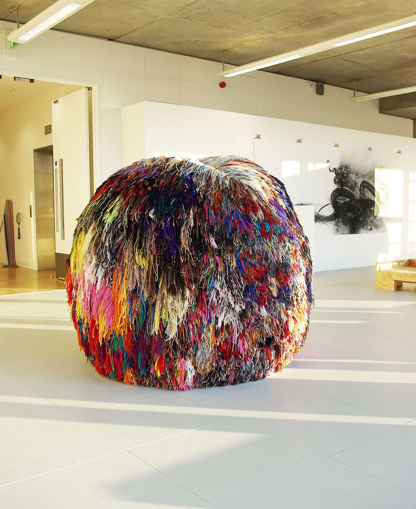

Over 200 Beautiful Colours, 2011 - 2012
Wool, newspaper and rope.
A pompom is traditionally an adornment, or an accessory. It should bounce and dangle flirtatiously. The super-sizing of this object disrupts these qualities - it becomes gross, heavy and vulgar. This draws attention to the absurdity and excessiveness of the endeavour, placing the frivolity of ornamentation in dialogue with ideas about taste and excess.
Download The Making - a booklet capturing the making process
Watch films of the wrapping and cutting